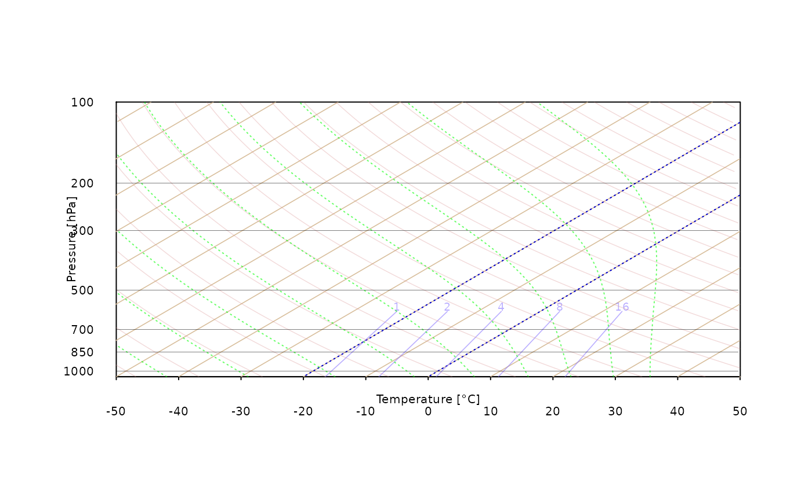
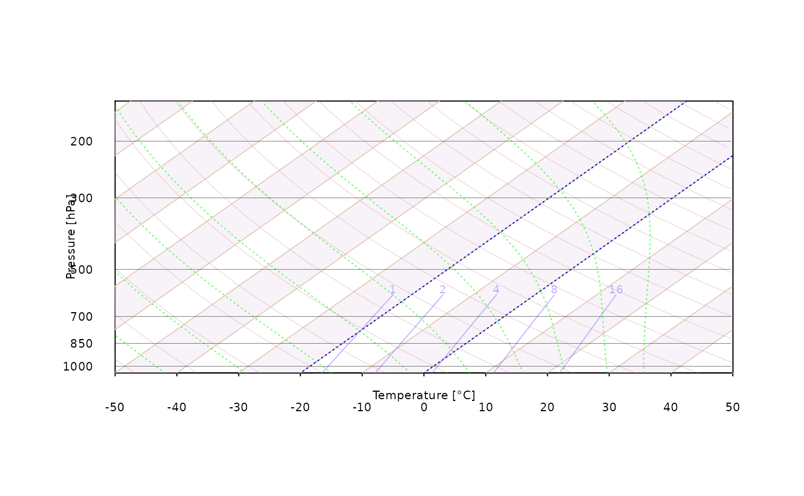
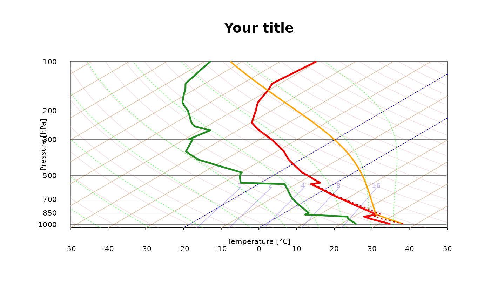

Function for plotting a customized version of the Skew-T diagram. Please note that drawing Skew-T may require increasing size or modifying aspect ratio of plotting window in order to provide readable results.
skewt_plot(
ptop = 100,
isoterms_col = "#d8be9b",
temp_stripes = FALSE,
mixing_ratio_col = "#8470FF90",
dry_adiabats_col = "#d6878750",
moist_adiabats_col = "#00FF0095",
deg45 = FALSE,
isotherm0 = TRUE,
close_par = TRUE,
...
)Pressure top level to be used for plotting diagram. Valid options: 200, 150, 100 (default) and 50 hPa
color to be used for drawing dry isoterms
logical, whether to draw color stripes for isotherms
color to be used for drawing mixing ratio isolines and labels. If set to NA or empty string isolines are not drawn
color to be used for drawing dry adiabats. If set to NA or not provided drawing lines skipped
color to be used for drawing moist adiabats. If set to NA or not provided drawing lines skipped
whether to preserve 45 degrees for diagonal isolines on Skew-T diagram regardless ploting window aspect ratio. [logical, default: FALSE]
whether to deliminate 0 degree Celsius isother [logical, default: TRUE]
if plot will be modified in next steps storing par settings is needed. This logical argument is turned on by default. If you want to modify Skew-T plot in next step set it to FALSE
additional (mostly graphical) parameters to be passed
Draws a Skew-T log-p diagram
skewt_plot(ptop = 100)

skewt_plot(ptop = 150, temp_stripes = TRUE) # add color stripes for temperature

skewt_plot(ptop = 100, close_par = FALSE)
title("Your title")
mtext('WMO ID: 11035, 2011-08-23 1200 UTC', padj = -0.5, col = "white")
data("sounding_vienna")
attach(sounding_vienna)
#> The following objects are masked from sounding_vienna (pos = 3):
#>
#> altitude, dpt, pressure, temp, wd, ws
#> The following object is masked from package:datasets:
#>
#> pressure
output = sounding_export(pressure, altitude, temp, dpt, wd, ws)
skewt_lines(output$dpt, output$pressure,type='l',col='forestgreen',lwd = 2.5)
skewt_lines(output$temp,output$pressure,type='l',col='red', lwd = 2.5)
skewt_lines(output$MU,output$pressure, col = "orange", lty = 1, lwd = 2)
skewt_lines(output$tempV,output$pressure, col = "red3", lty = 3, lwd = 1.5)
